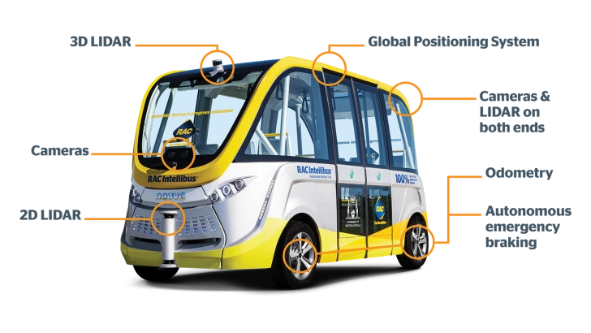

What are Autonomous Vehicles?
Autonomous vehicles, also known as ‘driverless cars’ or ‘automated vehicles’,are vehicles that offer the automation of tasks that we associate with driving. Vehicle automation can beregistered on a scale of zero to five(NHTSA2020).
- No automation -A human driver performs all driving tasks.
- Driver assistance -A single automated feature is offered. E.g., Cruise Control
- Partial automation -Features ADAS or Advanced DriverAssistance Systems that enables the vehicle to perform steering and acceleration;however, a human is still required to monitor the vehicle and can take control at any time.
- Conditional automation -Offers environmental detection capabilities that enable the vehicle to perform most driving tasks;however,human override is still required.
- High automation –Enablesthe vehicle to perform all tasks without human interaction;however,human override is still an option.
- Full automation –A vehicle is considered fully automated when it is able to perform all driving tasks without the need for any human interaction or attention.
Figure 1: Society of Automotive Engineers (SAE) Automation Levelsby NHTSA2020
Today, the most common form of automated vehicles are new cars that offer conditional automation (level 3) features,such as environmental detection capabilities that can perform most driving tasks, including accelerating, braking, turning or changing lanes. These tasks are delivered via a computer system but still require human override(NHTSA 2020).
Although high automation (level 4) vehicles are currently not available to the everyday consumer, there has been significant development in the deployment of these vehicles. Because of thecurrent limitations on legislation and infrastructure, the development of these vehicles has predominately been geared towardsshuttles,ridesharing and robotaxis.A small number of these vehicles are currently operationalaround the world, including Western Australia(NHTSA 2020).
When it comes to the technology behind the automation, most companies currently deploying conditional and high automated vehicles usethe same base level of technology. This technology includes:

Machine Learning-A type of Artificial Intelligence that uses a computer system that utilises a combination of algorithms and statistics to find patterns in data. These systems can then use that data to learn, adapt and make decisions without the need for human intervention (IBM 2020). Machine Learning provides the vehicle the ability to collect and interpret data on its surroundings based on information provided by cameras and sensors. This vehicle then uses this information to decide what actions to take.

LiDAR-A detection system that uses light pulses from a laser to measure variable distances (NOAA 2021).LiDAR provides autonomous vehicles the ability to ‘see’, in the sense that it provides a 360-degree view of its surroundings. This is done using a continuously rotating LiDAR system, allowing the vehicle to detect obstructions, avoiding collisions and resulting in a smoother ride.

Ultrasonic Sensors-A sensor that gauges the distance between objects by using high-frequency sound waves and measuring the time between emission and reception (Maxbotix 2021). Similar to LiDAR, ultrasonic sensorsallow the vehicle to detect obstacles, however, unlike LiDAR, it provides the unique ability to see through objects, making them ideal in bad weather (Medium 2020).
Radar-A system that uses electromagnetic sensors to detect, locate, track and recognise objects at variable distances (Britannica 2019). Radar allows autonomous vehicles to monitor the position of nearby vehicles.

Cameras-A device that uses a lens and light to capture an image (Britannica 2021).Cameras are placed on every side of an autonomous vehicle to provide a 360-degree view of its surroundings.
Impact of Autonomous Vehicles
As these technologies change and adapt, we will likely see fully automated (level 5) vehicles in testing phases over the next few years, resulting in more accessibility for the everyday consumer. The overall impact, be that positive or negative, will be significant.
Impact on Jobs
With the implementation of autonomous vehicles essentially making drivers redundant, perhaps the most obvious job affected would be the drivers of ridesharing services (Uber, Lyft etc.). Globally, there are currently over 3 million drivers working for Uber alone,and on average, each driver earns around $364 per month (Blair n.d). By removing the need to employ drivers, Uber can potentially cut their running costs by over $1.3 billion.
As technology changes and evolves, theDepartment of Industry, Science, Energy and Resources(DIIS) suggests that there is also the potential for employment growth across severalsectors,both existing and potentially entirely new industries, these industries include manufacturing, mining and agriculture (Parliament of Australia 2017).
Environmental Impact
Most companies developing autonomous vehicles are doing so with the aim to utilise electric vehicles as opposed to hybrid or combustion engine vehicles. It is estimated that using electric vehicles would reduce the amount of harmful greenhouse gas emissions by around 60% (Elezaj 2021). There has been some debate amongst researchers concerning whether an all-electric based autonomous vehicle will lead to significantly increased power needs, and as a result, autonomous vehicles would need to be gas-electric hybrids (Brewer 2020).
Safety Impact
It is estimated that 90% of all fatalities on the road are directly attributed to human error. These errors include speeding, drink/drug driving and distractions in and out of the vehicle (mobile phone use, exhaustion etc.) (NRSP 2013). Globally, 1.3 million people are killed in road accidents every year (WHO 2020). Australia alone reports an average of 1000 fatalities annually (BITRE 2020). Autonomous vehicles provide the ability to remove manual driving controls altogether, resulting in the eradication of all fatalities attributed to human error (NHSA 2020).

Figure 8: Road Deaths: 12 Month Total Australiaby BITRE, 2020
How Will This Effect You?
Personally, the implementation of fully autonomous (level 5) vehicles at a consumer level will have a significantimpact on my life. As an epileptic, although medically cleared to, I do not drive due to the potentialrisk imposed onmyself andothers.To go from place to place, I rely heavily on friends, family,and public transport. Autonomous vehicles have the capability to not only create safe driving environments but also provide me with a steady, reliable,independent mode of transport.
Without the need for a driver, these vehicles also have the potential to assist friends and family members who are new parents or have young children. Parents and caregivers will be able to focus all of their attention on those insidethe vehicle without having to be concerned aboutpotential distractions both inside and outside.
With the ability to eradicate human driving errors, they have the potential to not only make roads safer fordrivers but also pedestrians. This is especially significantto me as my father was fatally struck by a speeding vehicle in 2018.
Overall, the implementation of autonomous vehicles into society is largely positive but does,however,come with many drawbacks. As we are severalyears away from a fully autonomous vehicle becoming a staple in everyday life, the companies developing them have time to address these concerns with their ever-changing and adaptable technologies.
References
NHTSA 2020, Automated Vehicles for Safety, NHTSA, viewed 1 April 2021,
<https://www.nhtsa.gov/technology-innovation/automated-vehicles-safety>
RAC n.d, The Vehicle, RAC, viewed 1 April 2021,
Dohmse 2015, Machine Learning BE Computer 2015 PAT A Y, SlideToDoc, viewed 1 April 2021,
<https://slidetodoc.com/machine-learning-be-computer-2015-pat-a-y/>
National Ocean Service n.d, What is lidar?, NOAA, viewed 2 April 2021,
<https://oceanservice.noaa.gov/facts/lidar.html>
Merrill I. Skolnik, Radar, Brittanica, viewed 2 April 2021,
<https://www.britannica.com/technology/radar>
Roderick Burnett 2020, Understanding How Ultrasonic Sensors Work, MaxBotix, viewed 2 April 2021,
<https://www.maxbotix.com/articles/how-ultrasonic-sensors-work.html>
Brittanica n.d, Camera, Brittanica, viewed 2 April 2021,
<https://www.britannica.com/technology/camera>
Mahashreveta Choudhary 2020, Why LiDAR is important for autonomous vehicle?, Geospatial World, viewed 2 April 2021,
<https://www.geospatialworld.net/blogs/why-lidar-is-important-for-autonomous-vehicle/>
Marc Green & John Senders 2013, Human Error In Road Accidents, National Road Safety Partnership Program (NRSPP), viewed 2 April 2021,
<https://www.nrspp.org.au/resources/human-error-in-road-accidents/>
IBM Cloud Edition 2020, Machine Learning, IBM, viewed 3 April 2021,
<https://www.ibm.com/cloud/learn/machine-learning>
Oliver Cameron 2017, An Introduction to LIDAR: The Key Self-Driving Car Sensor, Voyage, viewed 3 April 2021,
<https://news.voyage.auto/an-introduction-to-lidar-the-key-self-driving-car-sensor-a7e405590cff>
Ansari Aquib 2020, Ultrasonic Sensor and Arduino Tutorial, Medium, viewed 3 April 2021,
<https://medium.com/@aquibansari12377/ultrasonic-sensor-and-arduino-tutorial-89c38c81f103>
EOL (Earth Observing Laboratory) n.d, How Do Radars Work?, National Center for Atmospheric Research, viewed 3 April 2021,
<https://www.eol.ucar.edu/content/how-do-radars-work>
Gabor Holtzer n.d, How Does a Camera Work?, Expert Photography, viewed 3 April 2021,
<https://expertphotography.com/how-does-a-camera-work>
Rilind Elezaj 2021, Surprising Ways How Driverless Cars Will Change Our Future, Machine Design, viewed 3 April 2021,
Madison Brewer 2020, The Electric Future of Autonomous Vehicles, Carnegie Mellon University, viewed 3 April 2021,
<https://www.cmu.edu/news/stories/archives/2020/july/electric-autonomous-vehicles.html>
World Health Organization (WHO) 2020, Road traffic injuries?, World Health Organization (WHO) 2020, viewed 4 April 2021,
<https://www.who.int/news-room/fact-sheets/detail/road-traffic-injuries>
Bureau of Infrastructure and Transport Research Economics (BITRE) 2020, Safety Statistics, Bureau of Infrastructure and Transport Research Economics (BITRE), viewed 4 April 2021,
<https://www.bitre.gov.au/statistics/safety>
Marc Green & John Senders 2013, Human Error In Road Accidents, National Road Safety Partnership Program (NRSPP), viewed 4 April 2021,
<https://www.nrspp.org.au/resources/human-error-in-road-accidents/>
Ian Blair n.d, Uber Revenue and Usage Statistics, Buildfire, viewed 8 April 2021,
<https://www.nrspp.org.au/resources/human-error-in-road-accidents/>
Parliament of Australia 2017, Employment, Parliament of Australia, viewed 8 April 2021,